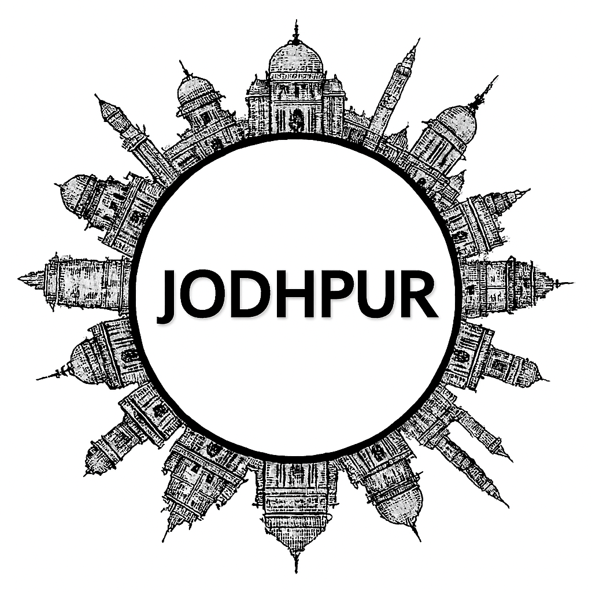

Jodhpur
Udaipur, often called the “City of Lakes,” is one of Rajasthan’s most romantic and picturesque destinations. Founded in 1559 by Maharana Udai Singh II, Udaipur is surrounded by the Aravalli Hills and dotted with shimmering lakes like Pichola and Fateh Sagar. The majestic City Palace complex showcases Mewar’s royal grandeur, while Jag Mandir and Lake Palace add charm with their island settings. Saheliyon ki Bari and Sajjangarh (Monsoon Palace) highlight its natural beauty. Udaipur’s vibrant culture shines through folk music, dance, and colorful festivals, while bustling bazaars brim with handicrafts, miniature paintings, and silver jewelry. Today, Udaipur is celebrated worldwide as a heritage city blending regal history with serene landscapes.
Jodhpur, often called the “Blue City,” is a dazzling jewel of Rajasthan, known for its striking indigo-painted houses and majestic forts. At its heart stands the imposing Mehrangarh Fort, perched high on a rocky hill, offering panoramic views of the city and the Thar Desert beyond. The Umaid Bhawan Palace, a blend of heritage and luxury, adds to Jodhpur’s royal charm. Bustling markets filled with handicrafts, spices, and textiles reflect the city’s vibrant culture, while traditional Marwari cuisine delights visitors with its rich flavors. With its mix of history, architecture, and desert allure, Jodhpur captures the essence of Rajasthan’s regal spirit and remains a favorite destination for travelers seeking both grandeur and authenticity.
Peaceful Nature Spots
Historical Places (Itihasik Jagah)
Local Markets (Shopping ke liye)
Famous Festivals
Famous Local Food Items
More Details
Gallery